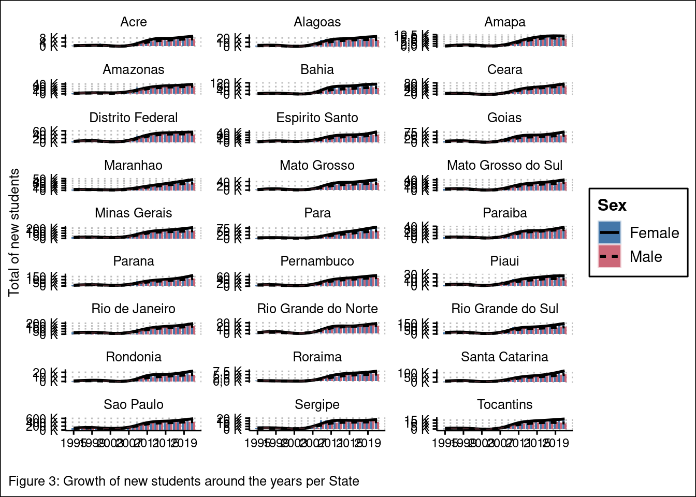

IES Analysis Brazil
ETL
Load libraries
Load data
We create a list of data frames for faster de creation of the data.
Feature enginering
The data frames don’t have information about Regions and States of Brazil because. We get this information with the IES CODE in the IES DATABASE.
View data frame structure
# A tibble: 6 × 201
NU_ANO_CENSO NO_REGIAO CO_REGIAO NO_UF SG_UF CO_UF NO_MUNICIPIO CO_MUNICIPIO
<int> <chr> <int> <chr> <chr> <int> <chr> <int>
1 2009 Norte 1 Rondôn… RO 11 Ariquemes 1100023
2 2009 Norte 1 Rondôn… RO 11 Ariquemes 1100023
3 2009 Norte 1 Rondôn… RO 11 Ariquemes 1100023
4 2009 Norte 1 Rondôn… RO 11 Ariquemes 1100023
5 2009 Norte 1 Rondôn… RO 11 Ariquemes 1100023
6 2009 Norte 1 Rondôn… RO 11 Ariquemes 1100023
# ℹ 193 more variables: IN_CAPITAL <int>, TP_DIMENSAO <int>,
# TP_ORGANIZACAO_ACADEMICA <int>, TP_CATEGORIA_ADMINISTRATIVA <int>,
# TP_REDE <int>, CO_IES <int>, NO_CURSO <chr>, CO_CURSO <int>,
# NO_CINE_ROTULO <chr>, CO_CINE_ROTULO <chr>, CO_CINE_AREA_GERAL <int>,
# NO_CINE_AREA_GERAL <chr>, CO_CINE_AREA_ESPECIFICA <int>,
# NO_CINE_AREA_ESPECIFICA <chr>, CO_CINE_AREA_DETALHADA <int>,
# NO_CINE_AREA_DETALHADA <chr>, TP_GRAU_ACADEMICO <int>, IN_GRATUITO <int>, …Describe variables
| Name | Piped data |
| Number of rows | 1886955 |
| Number of columns | 201 |
| _______________________ | |
| Column type frequency: | |
| character | 11 |
| numeric | 190 |
| ________________________ | |
| Group variables | None |
Variable type: character
| skim_variable | n_missing | complete_rate | min | max | empty | n_unique | whitespace |
|---|---|---|---|---|---|---|---|
| NO_REGIAO | 0 | 1.00 | 0 | 12 | 34256 | 6 | 0 |
| NO_UF | 0 | 1.00 | 0 | 19 | 34256 | 28 | 0 |
| SG_UF | 0 | 1.00 | 0 | 2 | 34256 | 28 | 0 |
| NO_MUNICIPIO | 0 | 1.00 | 0 | 29 | 34256 | 3198 | 0 |
| NO_CURSO | 0 | 1.00 | 3 | 200 | 0 | 9370 | 0 |
| NO_CINE_ROTULO | 0 | 1.00 | 4 | 98 | 0 | 366 | 0 |
| CO_CINE_ROTULO | 344691 | 0.82 | 9 | 9 | 0 | 366 | 0 |
| NO_CINE_AREA_GERAL | 0 | 1.00 | 8 | 58 | 0 | 11 | 0 |
| NO_CINE_AREA_ESPECIFICA | 0 | 1.00 | 5 | 98 | 0 | 37 | 0 |
| NO_CINE_AREA_DETALHADA | 0 | 1.00 | 5 | 98 | 0 | 89 | 0 |
| CO_CINE_ROTULO2 | 1542264 | 0.18 | 9 | 9 | 0 | 350 | 0 |
Variable type: numeric
| skim_variable | n_missing | complete_rate | mean | sd | p0 | p25 | p50 | p75 | p100 | hist |
|---|---|---|---|---|---|---|---|---|---|---|
| NU_ANO_CENSO | 0 | 1.00 | 2017.69 | 3.44 | 2009 | 2016 | 2019 | 2020 | 2021 | ▁▁▂▂▇ |
| CO_REGIAO | 34256 | 0.98 | 3.06 | 1.05 | 1 | 2 | 3 | 4 | 5 | ▂▃▇▅▂ |
| CO_UF | 34256 | 0.98 | 34.03 | 9.55 | 11 | 29 | 35 | 41 | 53 | ▂▂▇▃▂ |
| CO_MUNICIPIO | 34256 | 0.98 | 3419623.40 | 955648.59 | 1100015 | 2927408 | 3509502 | 4119905 | 5300108 | ▂▂▇▃▂ |
| IN_CAPITAL | 34256 | 0.98 | 0.17 | 0.38 | 0 | 0 | 0 | 0 | 1 | ▇▁▁▁▂ |
| TP_DIMENSAO | 0 | 1.00 | 1.79 | 0.45 | 1 | 2 | 2 | 2 | 4 | ▂▇▁▁▁ |
| TP_ORGANIZACAO_ACADEMICA | 0 | 1.00 | 1.60 | 0.73 | 1 | 1 | 1 | 2 | 5 | ▇▅▂▁▁ |
| TP_CATEGORIA_ADMINISTRATIVA | 0 | 1.00 | 4.04 | 1.03 | 1 | 4 | 4 | 4 | 9 | ▁▇▂▁▁ |
| TP_REDE | 64865 | 0.97 | 1.90 | 0.30 | 1 | 2 | 2 | 2 | 2 | ▁▁▁▁▇ |
| CO_IES | 0 | 1.00 | 1362.33 | 2451.04 | 1 | 322 | 671 | 1491 | 25613 | ▇▁▁▁▁ |
| CO_CURSO | 0 | 1.00 | 896052.29 | 709979.97 | 1 | 100630 | 1190156 | 1382707 | 50017018 | ▇▁▁▁▁ |
| CO_CINE_AREA_GERAL | 0 | 1.00 | 4.24 | 2.77 | 0 | 1 | 4 | 6 | 10 | ▆▇▂▂▃ |
| CO_CINE_AREA_ESPECIFICA | 0 | 1.00 | 43.59 | 27.85 | 1 | 11 | 41 | 61 | 108 | ▆▇▂▂▃ |
| CO_CINE_AREA_DETALHADA | 0 | 1.00 | 439.15 | 278.37 | 11 | 115 | 413 | 615 | 1088 | ▆▇▂▂▃ |
| TP_GRAU_ACADEMICO | 4349 | 1.00 | 2.07 | 0.86 | 1 | 1 | 2 | 3 | 4 | ▇▅▁▇▁ |
| IN_GRATUITO | 52146 | 0.97 | 0.09 | 0.28 | 0 | 0 | 0 | 0 | 1 | ▇▁▁▁▁ |
| TP_MODALIDADE_ENSINO | 0 | 1.00 | 1.78 | 0.42 | 1 | 2 | 2 | 2 | 2 | ▂▁▁▁▇ |
| TP_NIVEL_ACADEMICO | 0 | 1.00 | 1.00 | 0.03 | 1 | 1 | 1 | 1 | 2 | ▇▁▁▁▁ |
| QT_CURSO | 726856 | 0.61 | 0.39 | 0.49 | 0 | 0 | 0 | 1 | 1 | ▇▁▁▁▅ |
| QT_VG_TOTAL | 726856 | 0.61 | 116.34 | 1257.30 | 0 | 0 | 0 | 76 | 149108 | ▇▁▁▁▁ |
| QT_VG_TOTAL_DIURNO | 746430 | 0.60 | 20.19 | 75.10 | 0 | 0 | 0 | 0 | 20134 | ▇▁▁▁▁ |
| QT_VG_TOTAL_NOTURNO | 746430 | 0.60 | 36.45 | 101.28 | 0 | 0 | 0 | 35 | 20142 | ▇▁▁▁▁ |
| QT_VG_TOTAL_EAD | 726856 | 0.61 | 60.66 | 1250.52 | 0 | 0 | 0 | 0 | 149108 | ▇▁▁▁▁ |
| QT_VG_NOVA | 726856 | 0.61 | 69.96 | 1069.28 | 0 | 0 | 0 | 0 | 74600 | ▇▁▁▁▁ |
| QT_VG_PROC_SELETIVO | 726856 | 0.61 | 0.00 | 0.00 | 0 | 0 | 0 | 0 | 0 | ▁▁▇▁▁ |
| QT_VG_REMANESC | 726856 | 0.61 | 24.90 | 362.78 | 0 | 0 | 0 | 0 | 74587 | ▇▁▁▁▁ |
| QT_VG_PROG_ESPECIAL | 726856 | 0.61 | 0.31 | 42.04 | 0 | 0 | 0 | 0 | 29840 | ▇▁▁▁▁ |
| QT_INSCRITO_TOTAL | 726856 | 0.61 | 164.07 | 1357.11 | 0 | 0 | 0 | 70 | 398817 | ▇▁▁▁▁ |
| QT_INSCRITO_TOTAL_DIURNO | 746430 | 0.60 | 67.33 | 456.00 | 0 | 0 | 0 | 0 | 112694 | ▇▁▁▁▁ |
| QT_INSCRITO_TOTAL_NOTURNO | 746430 | 0.60 | 58.62 | 266.04 | 0 | 0 | 0 | 0 | 59935 | ▇▁▁▁▁ |
| QT_INSCRITO_TOTAL_EAD | 726856 | 0.61 | 34.27 | 1227.58 | 0 | 0 | 0 | 0 | 398817 | ▇▁▁▁▁ |
| QT_INSC_VG_NOVA | 726856 | 0.61 | 111.68 | 1256.57 | 0 | 0 | 0 | 0 | 398254 | ▇▁▁▁▁ |
| QT_INSC_PROC_SELETIVO | 726856 | 0.61 | 0.00 | 0.00 | 0 | 0 | 0 | 0 | 0 | ▁▁▇▁▁ |
| QT_INSC_VG_REMANESC | 726856 | 0.61 | 8.82 | 217.44 | 0 | 0 | 0 | 0 | 126798 | ▇▁▁▁▁ |
| QT_INSC_VG_PROG_ESPECIAL | 726856 | 0.61 | 0.29 | 15.20 | 0 | 0 | 0 | 0 | 5028 | ▇▁▁▁▁ |
| QT_ING | 19574 | 0.99 | 20.98 | 59.29 | 0 | 1 | 3 | 17 | 12082 | ▇▁▁▁▁ |
| QT_ING_FEM | 19574 | 0.99 | 11.81 | 38.69 | 0 | 0 | 1 | 8 | 11116 | ▇▁▁▁▁ |
| QT_ING_MASC | 19574 | 0.99 | 9.17 | 27.34 | 0 | 0 | 1 | 6 | 3333 | ▇▁▁▁▁ |
| QT_ING_DIURNO | 19574 | 0.99 | 4.84 | 24.08 | 0 | 0 | 0 | 0 | 1821 | ▇▁▁▁▁ |
| QT_ING_NOTURNO | 19574 | 0.99 | 8.25 | 32.73 | 0 | 0 | 0 | 0 | 5041 | ▇▁▁▁▁ |
| QT_ING_VG_NOVA | 19574 | 0.99 | 12.73 | 41.13 | 0 | 0 | 1 | 7 | 5041 | ▇▁▁▁▁ |
| QT_ING_VESTIBULAR | 19574 | 0.99 | 14.70 | 44.22 | 0 | 0 | 2 | 9 | 5037 | ▇▁▁▁▁ |
| QT_ING_ENEM | 19574 | 0.99 | 3.84 | 18.56 | 0 | 0 | 0 | 1 | 1714 | ▇▁▁▁▁ |
| QT_ING_AVALIACAO_SERIADA | 19574 | 0.99 | 0.06 | 1.39 | 0 | 0 | 0 | 0 | 301 | ▇▁▁▁▁ |
| QT_ING_SELECAO_SIMPLIFICA | 19574 | 0.99 | 0.98 | 10.85 | 0 | 0 | 0 | 0 | 2292 | ▇▁▁▁▁ |
| QT_ING_EGR | 19574 | 0.99 | 0.01 | 0.74 | 0 | 0 | 0 | 0 | 202 | ▇▁▁▁▁ |
| QT_ING_OUTRO_TIPO_SELECAO | 19574 | 0.99 | 0.00 | 0.00 | 0 | 0 | 0 | 0 | 0 | ▁▁▇▁▁ |
| QT_ING_PROC_SELETIVO | 19574 | 0.99 | 0.00 | 0.00 | 0 | 0 | 0 | 0 | 0 | ▁▁▇▁▁ |
| QT_ING_VG_REMANESC | 19574 | 0.99 | 1.67 | 11.91 | 0 | 0 | 0 | 0 | 2366 | ▇▁▁▁▁ |
| QT_ING_VG_PROG_ESPECIAL | 19574 | 0.99 | 0.05 | 1.86 | 0 | 0 | 0 | 0 | 601 | ▇▁▁▁▁ |
| QT_ING_OUTRA_FORMA | 19574 | 0.99 | 0.75 | 14.12 | 0 | 0 | 0 | 0 | 12023 | ▇▁▁▁▁ |
| QT_ING_0_17 | 19574 | 0.99 | 0.18 | 1.11 | 0 | 0 | 0 | 0 | 167 | ▇▁▁▁▁ |
| QT_ING_18_24 | 19574 | 0.99 | 10.90 | 33.36 | 0 | 0 | 1 | 5 | 2579 | ▇▁▁▁▁ |
| QT_ING_25_29 | 19574 | 0.99 | 3.57 | 11.06 | 0 | 0 | 1 | 3 | 1865 | ▇▁▁▁▁ |
| QT_ING_30_34 | 19574 | 0.99 | 2.50 | 8.34 | 0 | 0 | 0 | 2 | 2411 | ▇▁▁▁▁ |
| QT_ING_35_39 | 19574 | 0.99 | 1.72 | 6.28 | 0 | 0 | 0 | 1 | 2281 | ▇▁▁▁▁ |
| QT_ING_40_49 | 19574 | 0.99 | 1.62 | 6.78 | 0 | 0 | 0 | 1 | 3101 | ▇▁▁▁▁ |
| QT_ING_50_59 | 19574 | 0.99 | 0.43 | 2.13 | 0 | 0 | 0 | 0 | 993 | ▇▁▁▁▁ |
| QT_ING_60_MAIS | 19574 | 0.99 | 0.06 | 0.41 | 0 | 0 | 0 | 0 | 131 | ▇▁▁▁▁ |
| QT_ING_BRANCA | 19574 | 0.99 | 6.76 | 22.95 | 0 | 0 | 1 | 4 | 2537 | ▇▁▁▁▁ |
| QT_ING_PRETA | 19574 | 0.99 | 1.06 | 4.63 | 0 | 0 | 0 | 1 | 638 | ▇▁▁▁▁ |
| QT_ING_PARDA | 19574 | 0.99 | 4.44 | 18.31 | 0 | 0 | 0 | 2 | 2121 | ▇▁▁▁▁ |
| QT_ING_AMARELA | 19574 | 0.99 | 0.26 | 1.66 | 0 | 0 | 0 | 0 | 358 | ▇▁▁▁▁ |
| QT_ING_INDIGENA | 19574 | 0.99 | 0.08 | 1.21 | 0 | 0 | 0 | 0 | 313 | ▇▁▁▁▁ |
| QT_ING_CORND | 19574 | 0.99 | 8.39 | 36.16 | 0 | 0 | 0 | 3 | 11944 | ▇▁▁▁▁ |
| QT_MAT | 19574 | 0.99 | 53.81 | 159.59 | 0 | 1 | 4 | 35 | 16351 | ▇▁▁▁▁ |
| QT_MAT_FEM | 19574 | 0.99 | 30.85 | 100.77 | 0 | 0 | 2 | 17 | 14801 | ▇▁▁▁▁ |
| QT_MAT_MASC | 19574 | 0.99 | 22.96 | 74.28 | 0 | 0 | 2 | 12 | 5946 | ▇▁▁▁▁ |
| QT_MAT_DIURNO | 19574 | 0.99 | 15.42 | 78.93 | 0 | 0 | 0 | 0 | 5657 | ▇▁▁▁▁ |
| QT_MAT_NOTURNO | 19574 | 0.99 | 23.66 | 92.09 | 0 | 0 | 0 | 0 | 6105 | ▇▁▁▁▁ |
| QT_MAT_0_17 | 19574 | 0.99 | 0.17 | 1.06 | 0 | 0 | 0 | 0 | 173 | ▇▁▁▁▁ |
| QT_MAT_18_24 | 19574 | 0.99 | 26.97 | 92.11 | 0 | 0 | 1 | 9 | 6068 | ▇▁▁▁▁ |
| QT_MAT_25_29 | 19574 | 0.99 | 10.69 | 32.17 | 0 | 0 | 1 | 7 | 2391 | ▇▁▁▁▁ |
| QT_MAT_30_34 | 19574 | 0.99 | 6.39 | 20.17 | 0 | 0 | 1 | 5 | 2815 | ▇▁▁▁▁ |
| QT_MAT_35_39 | 19574 | 0.99 | 4.23 | 14.83 | 0 | 0 | 1 | 3 | 3006 | ▇▁▁▁▁ |
| QT_MAT_40_49 | 19574 | 0.99 | 4.05 | 16.96 | 0 | 0 | 1 | 3 | 4803 | ▇▁▁▁▁ |
| QT_MAT_50_59 | 19574 | 0.99 | 1.14 | 5.82 | 0 | 0 | 0 | 1 | 2101 | ▇▁▁▁▁ |
| QT_MAT_60_MAIS | 19574 | 0.99 | 0.18 | 1.08 | 0 | 0 | 0 | 0 | 323 | ▇▁▁▁▁ |
| QT_MAT_BRANCA | 19574 | 0.99 | 18.09 | 69.89 | 0 | 0 | 1 | 7 | 6620 | ▇▁▁▁▁ |
| QT_MAT_PRETA | 19574 | 0.99 | 2.73 | 12.57 | 0 | 0 | 0 | 1 | 1067 | ▇▁▁▁▁ |
| QT_MAT_PARDA | 19574 | 0.99 | 11.20 | 46.99 | 0 | 0 | 1 | 4 | 4319 | ▇▁▁▁▁ |
| QT_MAT_AMARELA | 19574 | 0.99 | 0.72 | 5.05 | 0 | 0 | 0 | 0 | 1253 | ▇▁▁▁▁ |
| QT_MAT_INDIGENA | 19574 | 0.99 | 0.22 | 3.28 | 0 | 0 | 0 | 0 | 1309 | ▇▁▁▁▁ |
| QT_MAT_CORND | 19574 | 0.99 | 20.85 | 92.49 | 0 | 0 | 1 | 6 | 16285 | ▇▁▁▁▁ |
| QT_CONC | 19574 | 0.99 | 7.87 | 29.54 | 0 | 0 | 0 | 3 | 6441 | ▇▁▁▁▁ |
| QT_CONC_FEM | 19574 | 0.99 | 4.79 | 20.81 | 0 | 0 | 0 | 1 | 5998 | ▇▁▁▁▁ |
| QT_CONC_MASC | 19574 | 0.99 | 3.08 | 12.03 | 0 | 0 | 0 | 1 | 2932 | ▇▁▁▁▁ |
| QT_CONC_DIURNO | 19574 | 0.99 | 2.02 | 12.21 | 0 | 0 | 0 | 0 | 1375 | ▇▁▁▁▁ |
| QT_CONC_NOTURNO | 19574 | 0.99 | 3.72 | 16.30 | 0 | 0 | 0 | 0 | 1459 | ▇▁▁▁▁ |
| QT_CONC_0_17 | 19574 | 0.99 | 0.00 | 0.01 | 0 | 0 | 0 | 0 | 5 | ▇▁▁▁▁ |
| QT_CONC_18_24 | 19574 | 0.99 | 2.85 | 11.58 | 0 | 0 | 0 | 0 | 1188 | ▇▁▁▁▁ |
| QT_CONC_25_29 | 19574 | 0.99 | 2.10 | 7.87 | 0 | 0 | 0 | 1 | 1136 | ▇▁▁▁▁ |
| QT_CONC_30_34 | 19574 | 0.99 | 1.13 | 4.89 | 0 | 0 | 0 | 0 | 1319 | ▇▁▁▁▁ |
| QT_CONC_35_39 | 19574 | 0.99 | 0.76 | 3.99 | 0 | 0 | 0 | 0 | 1304 | ▇▁▁▁▁ |
| QT_CONC_40_49 | 19574 | 0.99 | 0.77 | 5.43 | 0 | 0 | 0 | 0 | 2585 | ▇▁▁▁▁ |
| QT_CONC_50_59 | 19574 | 0.99 | 0.23 | 2.08 | 0 | 0 | 0 | 0 | 1343 | ▇▁▁▁▁ |
| QT_CONC_60_MAIS | 19574 | 0.99 | 0.04 | 0.36 | 0 | 0 | 0 | 0 | 147 | ▇▁▁▁▁ |
| QT_CONC_BRANCA | 19574 | 0.99 | 2.70 | 12.18 | 0 | 0 | 0 | 1 | 1467 | ▇▁▁▁▁ |
| QT_CONC_PRETA | 19574 | 0.99 | 0.34 | 2.05 | 0 | 0 | 0 | 0 | 311 | ▇▁▁▁▁ |
| QT_CONC_PARDA | 19574 | 0.99 | 1.47 | 7.81 | 0 | 0 | 0 | 0 | 939 | ▇▁▁▁▁ |
| QT_CONC_AMARELA | 19574 | 0.99 | 0.11 | 1.03 | 0 | 0 | 0 | 0 | 294 | ▇▁▁▁▁ |
| QT_CONC_INDIGENA | 19574 | 0.99 | 0.03 | 0.70 | 0 | 0 | 0 | 0 | 356 | ▇▁▁▁▁ |
| QT_CONC_CORND | 19574 | 0.99 | 3.22 | 20.42 | 0 | 0 | 0 | 0 | 6404 | ▇▁▁▁▁ |
| QT_ING_NACBRAS | 19574 | 0.99 | 20.95 | 59.20 | 0 | 1 | 3 | 17 | 12071 | ▇▁▁▁▁ |
| QT_ING_NACESTRANG | 19574 | 0.99 | 0.04 | 0.55 | 0 | 0 | 0 | 0 | 406 | ▇▁▁▁▁ |
| QT_MAT_NACBRAS | 19574 | 0.99 | 53.70 | 159.32 | 0 | 1 | 4 | 35 | 16351 | ▇▁▁▁▁ |
| QT_MAT_NACESTRANG | 19574 | 0.99 | 0.11 | 1.37 | 0 | 0 | 0 | 0 | 526 | ▇▁▁▁▁ |
| QT_CONC_NACBRAS | 19574 | 0.99 | 7.86 | 29.50 | 0 | 0 | 0 | 3 | 6441 | ▇▁▁▁▁ |
| QT_CONC_NACESTRANG | 19574 | 0.99 | 0.02 | 0.40 | 0 | 0 | 0 | 0 | 262 | ▇▁▁▁▁ |
| QT_ALUNO_DEFICIENTE | 19574 | 0.99 | 0.34 | 2.23 | 0 | 0 | 0 | 0 | 672 | ▇▁▁▁▁ |
| QT_ING_DEFICIENTE | 19574 | 0.99 | 0.09 | 0.76 | 0 | 0 | 0 | 0 | 372 | ▇▁▁▁▁ |
| QT_MAT_DEFICIENTE | 19574 | 0.99 | 0.25 | 1.85 | 0 | 0 | 0 | 0 | 617 | ▇▁▁▁▁ |
| QT_CONC_DEFICIENTE | 19574 | 0.99 | 0.03 | 0.34 | 0 | 0 | 0 | 0 | 84 | ▇▁▁▁▁ |
| QT_ING_FINANC | 19574 | 0.99 | 6.50 | 29.91 | 0 | 0 | 0 | 2 | 3403 | ▇▁▁▁▁ |
| QT_ING_FINANC_REEMB | 19574 | 0.99 | 1.43 | 11.05 | 0 | 0 | 0 | 0 | 1675 | ▇▁▁▁▁ |
| QT_ING_FIES | 19574 | 0.99 | 1.10 | 9.94 | 0 | 0 | 0 | 0 | 1675 | ▇▁▁▁▁ |
| QT_ING_RPFIES | 19574 | 0.99 | 0.25 | 4.09 | 0 | 0 | 0 | 0 | 654 | ▇▁▁▁▁ |
| QT_ING_FINANC_REEMB_OUTROS | 19574 | 0.99 | 0.09 | 1.93 | 0 | 0 | 0 | 0 | 638 | ▇▁▁▁▁ |
| QT_ING_FINANC_NREEMB | 19574 | 0.99 | 5.47 | 27.29 | 0 | 0 | 0 | 2 | 3398 | ▇▁▁▁▁ |
| QT_ING_PROUNII | 19574 | 0.99 | 0.76 | 3.78 | 0 | 0 | 0 | 0 | 623 | ▇▁▁▁▁ |
| QT_ING_PROUNIP | 19574 | 0.99 | 0.25 | 2.77 | 0 | 0 | 0 | 0 | 613 | ▇▁▁▁▁ |
| QT_ING_NRPFIES | 19574 | 0.99 | 4.15 | 25.11 | 0 | 0 | 0 | 1 | 3372 | ▇▁▁▁▁ |
| QT_ING_FINANC_NREEMB_OUTROS | 19574 | 0.99 | 0.43 | 4.94 | 0 | 0 | 0 | 0 | 899 | ▇▁▁▁▁ |
| QT_MAT_FINANC | 19574 | 0.99 | 16.14 | 73.11 | 0 | 0 | 0 | 3 | 8369 | ▇▁▁▁▁ |
| QT_MAT_FINANC_REEMB | 19574 | 0.99 | 5.41 | 36.24 | 0 | 0 | 0 | 0 | 3801 | ▇▁▁▁▁ |
| QT_MAT_FIES | 19574 | 0.99 | 4.68 | 33.92 | 0 | 0 | 0 | 0 | 3797 | ▇▁▁▁▁ |
| QT_MAT_RPFIES | 19574 | 0.99 | 0.50 | 7.97 | 0 | 0 | 0 | 0 | 2806 | ▇▁▁▁▁ |
| QT_MAT_FINANC_REEMB_OUTROS | 19574 | 0.99 | 0.32 | 5.68 | 0 | 0 | 0 | 0 | 2775 | ▇▁▁▁▁ |
| QT_MAT_FINANC_NREEMB | 19574 | 0.99 | 11.90 | 58.13 | 0 | 0 | 0 | 3 | 8365 | ▇▁▁▁▁ |
| QT_MAT_PROUNII | 19574 | 0.99 | 2.51 | 11.74 | 0 | 0 | 0 | 0 | 1111 | ▇▁▁▁▁ |
| QT_MAT_PROUNIP | 19574 | 0.99 | 0.82 | 8.26 | 0 | 0 | 0 | 0 | 1401 | ▇▁▁▁▁ |
| QT_MAT_NRPFIES | 19574 | 0.99 | 7.76 | 49.19 | 0 | 0 | 0 | 1 | 7950 | ▇▁▁▁▁ |
| QT_MAT_FINANC_NREEMB_OUTROS | 19574 | 0.99 | 1.16 | 12.77 | 0 | 0 | 0 | 0 | 4098 | ▇▁▁▁▁ |
| QT_CONC_FINANC | 19574 | 0.99 | 2.16 | 11.27 | 0 | 0 | 0 | 0 | 1377 | ▇▁▁▁▁ |
| QT_CONC_FINANC_REEMB | 19574 | 0.99 | 0.72 | 5.62 | 0 | 0 | 0 | 0 | 700 | ▇▁▁▁▁ |
| QT_CONC_FIES | 19574 | 0.99 | 0.64 | 5.27 | 0 | 0 | 0 | 0 | 693 | ▇▁▁▁▁ |
| QT_CONC_RPFIES | 19574 | 0.99 | 0.05 | 1.35 | 0 | 0 | 0 | 0 | 683 | ▇▁▁▁▁ |
| QT_CONC_FINANC_REEMB_OUTROS | 19574 | 0.99 | 0.05 | 1.27 | 0 | 0 | 0 | 0 | 469 | ▇▁▁▁▁ |
| QT_CONC_FINANC_NREEMB | 19574 | 0.99 | 1.59 | 9.09 | 0 | 0 | 0 | 0 | 1376 | ▇▁▁▁▁ |
| QT_CONC_PROUNII | 19574 | 0.99 | 0.38 | 2.21 | 0 | 0 | 0 | 0 | 375 | ▇▁▁▁▁ |
| QT_CONC_PROUNIP | 19574 | 0.99 | 0.13 | 1.48 | 0 | 0 | 0 | 0 | 231 | ▇▁▁▁▁ |
| QT_CONC_NRPFIES | 19574 | 0.99 | 0.97 | 7.47 | 0 | 0 | 0 | 0 | 1303 | ▇▁▁▁▁ |
| QT_CONC_FINANC_NREEMB_OUTROS | 19574 | 0.99 | 0.17 | 2.27 | 0 | 0 | 0 | 0 | 684 | ▇▁▁▁▁ |
| QT_ING_RESERVA_VAGA | 19574 | 0.99 | 0.82 | 6.12 | 0 | 0 | 0 | 0 | 770 | ▇▁▁▁▁ |
| QT_ING_RVREDEPUBLICA | 19574 | 0.99 | 0.68 | 5.42 | 0 | 0 | 0 | 0 | 666 | ▇▁▁▁▁ |
| QT_ING_RVETNICO | 19574 | 0.99 | 0.36 | 3.02 | 0 | 0 | 0 | 0 | 330 | ▇▁▁▁▁ |
| QT_ING_RVPDEF | 19574 | 0.99 | 0.01 | 0.18 | 0 | 0 | 0 | 0 | 34 | ▇▁▁▁▁ |
| QT_ING_RVSOCIAL_RF | 19574 | 0.99 | 0.26 | 2.44 | 0 | 0 | 0 | 0 | 308 | ▇▁▁▁▁ |
| QT_ING_RVOUTROS | 19574 | 0.99 | 0.03 | 1.58 | 0 | 0 | 0 | 0 | 770 | ▇▁▁▁▁ |
| QT_MAT_RESERVA_VAGA | 19574 | 0.99 | 2.45 | 19.00 | 0 | 0 | 0 | 0 | 3140 | ▇▁▁▁▁ |
| QT_MAT_RVREDEPUBLICA | 19574 | 0.99 | 1.98 | 16.88 | 0 | 0 | 0 | 0 | 3021 | ▇▁▁▁▁ |
| QT_MAT_RVETNICO | 19574 | 0.99 | 1.06 | 9.45 | 0 | 0 | 0 | 0 | 1069 | ▇▁▁▁▁ |
| QT_MAT_RVPDEF | 19574 | 0.99 | 0.02 | 0.46 | 0 | 0 | 0 | 0 | 123 | ▇▁▁▁▁ |
| QT_MAT_RVSOCIAL_RF | 19574 | 0.99 | 0.74 | 7.64 | 0 | 0 | 0 | 0 | 1531 | ▇▁▁▁▁ |
| QT_MAT_RVOUTROS | 19574 | 0.99 | 0.09 | 2.80 | 0 | 0 | 0 | 0 | 948 | ▇▁▁▁▁ |
| QT_CONC_RESERVA_VAGA | 19574 | 0.99 | 0.19 | 2.13 | 0 | 0 | 0 | 0 | 441 | ▇▁▁▁▁ |
| QT_CONC_RVREDEPUBLICA | 19574 | 0.99 | 0.15 | 1.76 | 0 | 0 | 0 | 0 | 302 | ▇▁▁▁▁ |
| QT_CONC_RVETNICO | 19574 | 0.99 | 0.07 | 1.00 | 0 | 0 | 0 | 0 | 249 | ▇▁▁▁▁ |
| QT_CONC_RVPDEF | 19574 | 0.99 | 0.00 | 0.06 | 0 | 0 | 0 | 0 | 36 | ▇▁▁▁▁ |
| QT_CONC_RVSOCIAL_RF | 19574 | 0.99 | 0.05 | 0.74 | 0 | 0 | 0 | 0 | 124 | ▇▁▁▁▁ |
| QT_CONC_RVOUTROS | 19574 | 0.99 | 0.01 | 0.62 | 0 | 0 | 0 | 0 | 323 | ▇▁▁▁▁ |
| QT_SIT_TRANCADA | 19574 | 0.99 | 8.04 | 36.34 | 0 | 0 | 0 | 3 | 3675 | ▇▁▁▁▁ |
| QT_SIT_DESVINCULADO | 19574 | 0.99 | 11.90 | 40.38 | 0 | 0 | 1 | 8 | 12110 | ▇▁▁▁▁ |
| QT_SIT_TRANSFERIDO | 19574 | 0.99 | 0.66 | 8.49 | 0 | 0 | 0 | 0 | 4005 | ▇▁▁▁▁ |
| QT_SIT_FALECIDO | 19574 | 0.99 | 0.01 | 0.13 | 0 | 0 | 0 | 0 | 29 | ▇▁▁▁▁ |
| QT_ING_PROCESCPUBLICA | 19574 | 0.99 | 12.79 | 38.92 | 0 | 0 | 2 | 8 | 3486 | ▇▁▁▁▁ |
| QT_ING_PROCESCPRIVADA | 19574 | 0.99 | 4.72 | 23.08 | 0 | 0 | 0 | 1 | 4304 | ▇▁▁▁▁ |
| QT_ING_PROCNAOINFORMADA | 19574 | 0.99 | 2.35 | 24.71 | 0 | 0 | 0 | 0 | 12082 | ▇▁▁▁▁ |
| QT_MAT_PROCESCPUBLICA | 19574 | 0.99 | 28.81 | 88.93 | 0 | 0 | 2 | 16 | 6833 | ▇▁▁▁▁ |
| QT_MAT_PROCESCPRIVADA | 19574 | 0.99 | 13.04 | 67.51 | 0 | 0 | 0 | 2 | 7457 | ▇▁▁▁▁ |
| QT_MAT_PROCNAOINFORMADA | 19574 | 0.99 | 8.75 | 68.23 | 0 | 0 | 0 | 0 | 16351 | ▇▁▁▁▁ |
| QT_CONC_PROCESCPUBLICA | 19574 | 0.99 | 3.98 | 15.58 | 0 | 0 | 0 | 1 | 2807 | ▇▁▁▁▁ |
| QT_CONC_PROCESCPRIVADA | 19574 | 0.99 | 1.78 | 10.89 | 0 | 0 | 0 | 0 | 1351 | ▇▁▁▁▁ |
| QT_CONC_PROCNAOINFORMADA | 19574 | 0.99 | 1.59 | 17.03 | 0 | 0 | 0 | 0 | 6435 | ▇▁▁▁▁ |
| QT_PARFOR | 19574 | 0.99 | 0.36 | 13.31 | 0 | 0 | 0 | 0 | 5059 | ▇▁▁▁▁ |
| QT_ING_PARFOR | 19574 | 0.99 | 0.07 | 3.45 | 0 | 0 | 0 | 0 | 1139 | ▇▁▁▁▁ |
| QT_MAT_PARFOR | 19574 | 0.99 | 0.28 | 10.60 | 0 | 0 | 0 | 0 | 4416 | ▇▁▁▁▁ |
| QT_CONC_PARFOR | 19574 | 0.99 | 0.05 | 4.25 | 0 | 0 | 0 | 0 | 3868 | ▇▁▁▁▁ |
| QT_APOIO_SOCIAL | 19574 | 0.99 | 6.78 | 45.17 | 0 | 0 | 0 | 0 | 6212 | ▇▁▁▁▁ |
| QT_ING_APOIO_SOCIAL | 19574 | 0.99 | 1.95 | 13.38 | 0 | 0 | 0 | 0 | 1879 | ▇▁▁▁▁ |
| QT_MAT_APOIO_SOCIAL | 19574 | 0.99 | 5.38 | 35.38 | 0 | 0 | 0 | 0 | 3514 | ▇▁▁▁▁ |
| QT_CONC_APOIO_SOCIAL | 19574 | 0.99 | 0.74 | 5.59 | 0 | 0 | 0 | 0 | 571 | ▇▁▁▁▁ |
| QT_ATIV_EXTRACURRICULAR | 19574 | 0.99 | 9.33 | 66.72 | 0 | 0 | 0 | 0 | 8457 | ▇▁▁▁▁ |
| QT_ING_ATIV_EXTRACURRICULAR | 19574 | 0.99 | 2.09 | 18.43 | 0 | 0 | 0 | 0 | 3907 | ▇▁▁▁▁ |
| QT_MAT_ATIV_EXTRACURRICULAR | 19574 | 0.99 | 8.10 | 56.11 | 0 | 0 | 0 | 0 | 6970 | ▇▁▁▁▁ |
| QT_CONC_ATIV_EXTRACURRICULAR | 19574 | 0.99 | 1.39 | 10.60 | 0 | 0 | 0 | 0 | 1627 | ▇▁▁▁▁ |
| QT_MOB_ACADEMICA | 19574 | 0.99 | 0.07 | 1.88 | 0 | 0 | 0 | 0 | 581 | ▇▁▁▁▁ |
| QT_ING_MOB_ACADEMICA | 19574 | 0.99 | 0.00 | 0.26 | 0 | 0 | 0 | 0 | 130 | ▇▁▁▁▁ |
| QT_MAT_MOB_ACADEMICA | 19574 | 0.99 | 0.06 | 1.68 | 0 | 0 | 0 | 0 | 523 | ▇▁▁▁▁ |
| QT_CONC_MOB_ACADEMICA | 19574 | 0.99 | 0.00 | 0.22 | 0 | 0 | 0 | 0 | 107 | ▇▁▁▁▁ |
Create new data frames - profile students
Code
students <- listed_df %>%
unnest(cols = '.') %>% # unlist and merge data.frames
janitor::clean_names() %>%
select(co_ies, nu_ano_censo, no_regiao, no_uf, starts_with('qt_in')) %>%
right_join(regions_states, by = c('co_ies', 'no_regiao', 'no_uf')) %>%
group_by(nu_ano_censo, no_regiao, no_uf) %>%
summarise_all(sum, na.rm = T) %>%
ungroup()Data analysis
Time Series
Students by sex - Brazil
Code
head(students) # A tibble: 6 × 68
nu_ano_censo no_regiao no_uf co_ies qt_inscrito_total qt_inscrito_total_di…¹
<int> <chr> <chr> <int> <int> <int>
1 2009 Centro-Oes… Dist… 6.32e5 182408 0
2 2009 Centro-Oes… Goiás 1.23e6 169410 0
3 2009 Centro-Oes… Mato… 5.64e5 90688 0
4 2009 Centro-Oes… Mato… 7.35e5 59392 0
5 2009 Nordeste Alag… 6.96e5 67306 0
6 2009 Nordeste Bahia 2.27e6 292286 0
# ℹ abbreviated name: ¹qt_inscrito_total_diurno
# ℹ 62 more variables: qt_inscrito_total_noturno <int>,
# qt_inscrito_total_ead <int>, qt_insc_vg_nova <int>,
# qt_insc_proc_seletivo <int>, qt_insc_vg_remanesc <int>,
# qt_insc_vg_prog_especial <int>, qt_ing <int>, qt_ing_fem <int>,
# qt_ing_masc <int>, qt_ing_diurno <int>, qt_ing_noturno <int>,
# qt_ing_vg_nova <int>, qt_ing_vestibular <int>, qt_ing_enem <int>, …Code
students %>%
mutate(data = zoo::as.yearmon(nu_ano_censo)) %>%
group_by(data) %>%
summarise_at(c('qt_ing_fem', 'qt_ing_masc'), sum) %>%
gather('var', 'value', 2:3) %>%
ggplot(aes(x = data,
y = value,
linetype = factor(var,
labels = c('Female', 'Male')),
fill = factor(var,
labels = c('Female', 'Male')))) +
geom_bar(stat = 'identity', position = 'dodge') +
geom_smooth(method = 'loess', col = 'black') +
ggthemes::scale_fill_ptol() +
ggthemes::theme_clean() +
guides(fill = guide_legend('Sex'),
linetype = guide_legend('Sex')) +
xlab('') +
scale_y_continuous(name = 'Number of students admitted',
labels = scales::label_number(suffix = "K", scale = 1e-3, big.mark = '.'),
breaks = seq(0,1500000, by = 250000)) +
ggtitle('Number of Students by sex')Students by time - Regions
Code
students %>%
mutate(data = zoo::as.yearmon(nu_ano_censo)) %>%
group_by(data, no_regiao) %>%
summarise_at(c('qt_ing_fem', 'qt_ing_masc'), sum) %>%
gather('var', 'value', 3:4) %>%
ggplot(aes(x = data,
y = value,
linetype = factor(var,
labels = c('Female', 'Male')),
fill = factor(var,
labels = c('Female', 'Male')))) +
geom_bar(stat = 'identity', position = 'dodge') +
geom_smooth(method = 'loess', col = 'black') +
facet_wrap(~ no_regiao, scales = 'free_y') +
ggthemes::scale_fill_ptol() +
ggthemes::theme_clean() +
guides(fill = guide_legend('Sex'),
linetype = guide_legend('Sex')) +
xlab('') +
scale_y_continuous(name = 'Number of students admitted',
labels = scales::label_number(suffix = " K", scale = 1e-3)) +
ggtitle('Number of Students by sex and Region')
Students by time - States
Code
students %>%
mutate(data = zoo::as.yearmon(nu_ano_censo)) %>%
group_by(data, no_uf) %>%
summarise_at(c('qt_ing_fem', 'qt_ing_masc'), sum) %>%
gather('var', 'value', 3:4) %>%
ggplot(aes(x = data,
y = value,
linetype = factor(var,
labels = c('Female', 'Male')),
fill = factor(var,
labels = c('Female', 'Male')))) +
geom_bar(stat = 'identity', position = 'dodge') +
geom_smooth(method = 'loess', col = 'black') +
facet_wrap(~ no_uf, scales = 'free_y') +
ggthemes::scale_fill_ptol() +
ggthemes::theme_clean() +
guides(fill = guide_legend('Sex'),
linetype = guide_legend('Sex')) +
xlab('') +
scale_y_continuous(name = 'Number of students admitted',
labels = scales::label_number(suffix = " K", scale = 1e-3)) +
ggtitle('Number of Students by sex and States')Students by ethnic group - Brazil
We use the IBGE’s ethnicity classification. Link: https://educa.ibge.gov.br/jovens/conheca-o-brasil/populacao/18319-cor-ou-raca.html
Code
students %>%
mutate(data = zoo::as.yearmon(nu_ano_censo)) %>%
group_by(data) %>%
summarise_at(c('qt_ing_branca', 'qt_ing_preta', 'qt_ing_indigena',
'qt_ing_parda', 'qt_ing_amarela', 'qt_ing_cornd'), sum) %>%
gather('var', 'value', 2:7) %>%
mutate(var = case_when(var == 'qt_ing_branca' ~ 'White',
var == 'qt_ing_preta' ~ 'Black',
var == 'qt_ing_indigena' ~ 'Indigenous',
var == 'qt_ing_parda' ~ 'Brown',
var == 'qt_ing_amarela' ~ 'Asian',
var == 'qt_ing_cornd' ~ 'Not\nDefined')) %>%
ggplot(aes(x = data,
y = value,
linetype = var,
fill = var)) +
geom_bar(stat = 'identity', position = 'dodge') +
geom_smooth(method = 'loess', col = 'black') +
ggthemes::scale_fill_ptol() +
ggthemes::theme_clean() +
facet_wrap( ~ var, scales = 'free_y') +
guides(fill = F,
linetype = F) +
xlab('') +
scale_y_continuous(name = 'Number of students admitted',
labels = scales::label_number(suffix = "K", scale = 1e-3, big.mark = '.')) +
ggtitle('Number of Students by ethnic group')Students by ethnic group - Regions
Code
students %>%
mutate(data = zoo::as.yearmon(nu_ano_censo)) %>%
group_by(data, no_regiao) %>%
summarise_at(c('qt_ing_branca', 'qt_ing_preta', 'qt_ing_indigena',
'qt_ing_parda', 'qt_ing_amarela', 'qt_ing_cornd'), sum) %>%
gather('var', 'value', 3:8) %>%
mutate(var = case_when(var == 'qt_ing_branca' ~ 'White',
var == 'qt_ing_preta' ~ 'Black',
var == 'qt_ing_indigena' ~ 'Indigenous',
var == 'qt_ing_parda' ~ 'Brown',
var == 'qt_ing_amarela' ~ 'Asian',
var == 'qt_ing_cornd' ~ 'Not\nDefined')) %>%
ggplot(aes(x = data,
y = value,
linetype = var,
fill = var)) +
geom_bar(stat = 'identity', position = 'dodge') +
geom_smooth(method = 'loess', col = 'black') +
ggthemes::scale_fill_ptol() +
ggthemes::theme_clean() +
facet_grid(var ~ no_regiao, scales = 'free_y') +
guides(fill = F,
linetype = F) +
xlab('') +
scale_y_continuous(name = 'Number of students admitted',
labels = scales::label_number(suffix = "K", scale = 1e-3, big.mark = '.')) +
ggtitle('Number of Students by ethnic group and Region')Students by age - Brazil
Code
students %>%
mutate(data = zoo::as.yearmon(nu_ano_censo)) %>%
group_by(data) %>%
summarise_at(c("qt_ing_0_17", "qt_ing_18_24", "qt_ing_25_29", "qt_ing_30_34",
"qt_ing_35_39", "qt_ing_40_49", "qt_ing_50_59", "qt_ing_60_mais"), sum) %>%
gather('var', 'value', 2:9) %>%
mutate(var = case_when(var == 'qt_ing_0_17' ~ '<18',
var == 'qt_ing_18_24' ~ '18~24',
var == 'qt_ing_25_29' ~ '25~29',
var == 'qt_ing_30_34' ~ '30~34',
var == 'qt_ing_35_39' ~ '35~39',
var == 'qt_ing_40_49' ~ '40~49',
var == 'qt_ing_50_59' ~ '50~59',
var == 'qt_ing_60_mais' ~ '>60'),
var = fct_relevel(as.factor(var), '<18', '18~24', '25~29',
'30~34', '35~39', '40~49',
'50~59', '>60')) %>%
ggplot(aes(x = data,
y = value,
linetype = var,
fill = var)) +
geom_bar(stat = 'identity', position = 'dodge') +
geom_smooth(method = 'loess', col = 'black') +
ggthemes::scale_fill_ptol() +
ggthemes::theme_clean() +
facet_wrap( ~ var, scales = 'free_y') +
guides(fill = F,
linetype = F) +
xlab('') +
scale_y_continuous(name = 'Number of students admitted',
labels = scales::label_number(suffix = "K", scale = 1e-3, big.mark = '.')) +
ggtitle('Number of Students by age')Students by ethnic group - Regions
Code
students %>%
mutate(data = zoo::as.yearmon(nu_ano_censo)) %>%
group_by(data, no_regiao) %>%
summarise_at(c("qt_ing_0_17", "qt_ing_18_24", "qt_ing_25_29", "qt_ing_30_34",
"qt_ing_35_39", "qt_ing_40_49", "qt_ing_50_59", "qt_ing_60_mais"), sum) %>%
gather('var', 'value', 3:10) %>%
mutate(var = case_when(var == 'qt_ing_0_17' ~ '<18',
var == 'qt_ing_18_24' ~ '18~24',
var == 'qt_ing_25_29' ~ '25~29',
var == 'qt_ing_30_34' ~ '30~34',
var == 'qt_ing_35_39' ~ '35~39',
var == 'qt_ing_40_49' ~ '40~49',
var == 'qt_ing_50_59' ~ '50~59',
var == 'qt_ing_60_mais' ~ '>60'),
var = fct_relevel(as.factor(var), '<18', '18~24', '25~29',
'30~34', '35~39', '40~49',
'50~59', '>60')) %>%
ggplot(aes(x = data,
y = value,
linetype = var,
fill = var)) +
geom_bar(stat = 'identity', position = 'dodge') +
geom_smooth(method = 'loess', col = 'black') +
ggthemes::scale_fill_ptol() +
ggthemes::theme_clean() +
facet_grid(var ~ no_regiao, scales = 'free_y') +
guides(fill = F,
linetype = F) +
xlab('') +
scale_y_continuous(name = 'Number of students admitted',
labels = scales::label_number(suffix = "K", scale = 1e-3, big.mark = '.')) +
ggtitle('Number of Students by age')Statistical Analysis
What explain the growth of students admmited around the years?
Code
stats_df <- students %>%
mutate(data = zoo::as.yearmon(nu_ano_censo)) %>%
group_by(data, no_regiao, no_uf) %>%
summarise_if(is.numeric, sum) %>%
ungroup() %>%
select(data, no_regiao, no_uf, qt_ing_fem:qt_ing_noturno, qt_ing_0_17:qt_ing_cornd, qt_ing_financ:qt_ing_apoio_social) %>%
gather('var', 'value', 4:42) %>%
group_by(data, no_regiao, no_uf, var) %>%
summarise_if(is.numeric, sum) %>%
ungroup()Code
stats_df %>%
mutate(value = ifelse(value == 0, 1, value)) %>%
lm(log(value) ~ as.factor(var) + data + as.factor(no_regiao) + as.factor(no_uf), data = .) %>%
sjPlot::tab_model(show.ci = F, show.est = T, show.se = T, show.r2 = T, show.stat = T,
pred.labels = labels_table_model,
dv.labels = 'Relationship between number of students admitted')| Relationship between number of students admitted | ||||
| Predictors | Estimates | std. Error | Statistic | p |
| Intercept | -203.99 | 7.33 | -27.82 | <0.001 |
| Age (18~24) | 3.74 | 0.12 | 31.11 | <0.001 |
| Age (25~29) | 2.38 | 0.12 | 19.83 | <0.001 |
| Age (30~34) | 1.91 | 0.12 | 15.89 | <0.001 |
| Age (35~39) | 1.42 | 0.12 | 11.85 | <0.001 |
| Age (40~49) | 1.29 | 0.12 | 10.69 | <0.001 |
| Age (50~59) | -0.11 | 0.12 | -0.91 | 0.364 |
| Age (>60) | -2.04 | 0.12 | -16.98 | <0.001 |
| Ethnic (Asian) | -0.26 | 0.12 | -2.20 | 0.028 |
| Any Social Support | 1.09 | 0.12 | 9.10 | <0.001 |
| Ethnic (White) | 2.71 | 0.12 | 22.57 | <0.001 |
| Ethnic (Not declared) | 3.10 | 0.12 | 25.77 | <0.001 |
| Shift (Diurnal) | 2.52 | 0.12 | 20.97 | <0.001 |
| Sex (Female) | 3.67 | 0.12 | 30.50 | <0.001 |
| Income Support (FIES) | 1.11 | 0.12 | 9.24 | <0.001 |
| Income Support | 2.86 | 0.12 | 23.79 | <0.001 |
| Income Support (Non-refundable) |
2.52 | 0.12 | 20.93 | <0.001 |
| Income Support (Non-refundable others) |
-0.90 | 0.12 | -7.46 | <0.001 |
| Income Support (Refundable) |
1.51 | 0.12 | 12.55 | <0.001 |
| Income Support (Refundable others) |
-1.86 | 0.12 | -15.46 | <0.001 |
| Ethnic (Indigenous) | -1.43 | 0.12 | -11.93 | <0.001 |
| Sex (Male) | 3.44 | 0.12 | 28.60 | <0.001 |
| Shift (Nocturnal) | 2.84 | 0.12 | 23.63 | <0.001 |
| Income Support (Non-refundable FIES) |
1.88 | 0.12 | 15.68 | <0.001 |
| Ethnic (Brown) | 2.77 | 0.12 | 23.03 | <0.001 |
| Social Support (PARFOR) | -4.33 | 0.12 | -36.00 | <0.001 |
| Ethnic (Black) | 1.13 | 0.12 | 9.42 | <0.001 |
| Type high school (Private) |
2.14 | 0.12 | 17.78 | <0.001 |
| Type high school (Public) | 2.85 | 0.12 | 23.67 | <0.001 |
| Type high school (Not declared) |
-3.01 | 0.12 | -24.99 | <0.001 |
| Income Support (PROUNI whole) |
0.77 | 0.12 | 6.37 | <0.001 |
| Income Support (PROUNI parcial) |
-0.48 | 0.12 | -4.00 | <0.001 |
| Social Support (Quotas) | 1.09 | 0.12 | 9.03 | <0.001 |
| Income Support (Refundable FIES) |
-1.69 | 0.12 | -14.06 | <0.001 |
| Social Support (Ethnic quotas) |
-0.28 | 0.12 | -2.30 | 0.021 |
| Social Support (Other quotas) |
-3.45 | 0.12 | -28.69 | <0.001 |
| Social Support (Disabilities quotas) |
-3.93 | 0.12 | -32.66 | <0.001 |
| Social Support (Public high school quotas) |
0.67 | 0.12 | 5.54 | <0.001 |
| Social Support (Family income quotas) |
-1.03 | 0.12 | -8.61 | <0.001 |
| Date | 0.10 | 0.00 | 28.68 | <0.001 |
| Region (Nordeste) | -0.47 | 0.10 | -4.74 | <0.001 |
| Region (Norte) | -1.85 | 0.10 | -18.44 | <0.001 |
| Region (Sudeste) | 2.67 | 0.10 | 26.72 | <0.001 |
| Region (Sul) | 0.85 | 0.10 | 8.51 | <0.001 |
| State (Alagoas) | -0.08 | 0.10 | -0.80 | 0.423 |
| State (Amapá) | 0.25 | 0.10 | 2.53 | 0.011 |
| State (Amazonas) | 1.86 | 0.10 | 18.56 | <0.001 |
| State (Bahia) | 1.62 | 0.10 | 16.23 | <0.001 |
| State (Ceará) | 0.97 | 0.10 | 9.69 | <0.001 |
| State (Distrito Federal) | 0.36 | 0.10 | 3.60 | <0.001 |
| State (Espirito Santo) | -2.61 | 0.10 | -26.06 | <0.001 |
| State (Goiás) | 0.59 | 0.10 | 5.89 | <0.001 |
| State (Maranhão) | 0.59 | 0.10 | 5.91 | <0.001 |
| State (Mato Grosso) | 0.03 | 0.10 | 0.33 | 0.744 |
| State (Minas Gerais) | -0.95 | 0.10 | -9.49 | <0.001 |
| State (Pará) | 1.93 | 0.10 | 19.25 | <0.001 |
| State (Paraíba) | 0.69 | 0.10 | 6.95 | <0.001 |
| State (Paraná) | 0.66 | 0.10 | 6.58 | <0.001 |
| State (Alagoas) | 1.09 | 0.10 | 10.89 | <0.001 |
| State (Pernambuco) | -0.00 | 0.10 | -0.03 | 0.978 |
| State (Rio de Janeiro) | -0.93 | 0.10 | -9.32 | <0.001 |
| State (Rio Grande do Norte) |
0.29 | 0.10 | 2.90 | 0.004 |
| State (Rio Grande do Sul) | 0.44 | 0.10 | 4.39 | <0.001 |
| State (Rondônia) | 0.98 | 0.10 | 9.78 | <0.001 |
| State (Roraima) | -0.15 | 0.10 | -1.49 | 0.136 |
| State (Tocantins) | 0.85 | 0.10 | 8.47 | <0.001 |
| Observations | 13689 | |||
| R2 / R2 adjusted | 0.704 / 0.703 | |||
Cluster Analysis
Region and Sex
Code
cluster_regiao_sex <- stats_df %>%
pivot_wider(names_from = var, values_from = value) %>%
group_by(no_regiao) %>%
summarise_if(is.numeric, sum) %>%
select(no_regiao, Male = qt_ing_masc, Female = qt_ing_fem)
names_cluster_regiao_sex <- cluster_regiao_sex$no_regiao
cluster_regiao_sex <- scale(cluster_regiao_sex[,2:3])
rownames(cluster_regiao_sex) <- names_cluster_regiao_sexDetermine numbers of clusters with 1000 boostraping Monte-Carlo’s method. **The highest GAP value determines the number of clusters
Code
clusGap(cluster_regiao_sex, FUN = kmeans, K.max = 4, B = 1000)Clustering Gap statistic ["clusGap"] from call:
clusGap(x = cluster_regiao_sex, FUNcluster = kmeans, K.max = 4, B = 1000)
B=1000 simulated reference sets, k = 1..4; spaceH0="scaledPCA"
--> Number of clusters (method 'firstSEmax', SE.factor=1): 3
logW E.logW gap SE.sim
[1,] 0.4505538 0.1137544 -0.3367994 0.3310093
[2,] -0.7881861 -1.0546936 -0.2665074 0.4799946
[3,] -2.7123135 -2.0631702 0.6491432 0.7010267
[4,] -2.9323467 -3.3275129 -0.3951662 1.1037812Code
fviz_cluster(kmeans(cluster_regiao_sex, 4, nstart = 25), cluster_regiao_sex[,1:2], ellipse.type = "norm",
repel = T, ggtheme = ggthemes::theme_clean(), palette = c('#4477AA', '#CC6677', '#117733', '#AA4499'),
main = 'Grouping by Regions and Sex')States and Sex
Code
cluster_uf_sex <- stats_df %>%
pivot_wider(names_from = var, values_from = value) %>%
group_by(no_uf) %>%
summarise_if(is.numeric, sum) %>%
select(no_uf, Male = qt_ing_masc, Female = qt_ing_fem) %>%
ungroup()
names_cluster_uf_sex <- cluster_uf_sex$no_uf
cluster_uf_sex <- scale(cluster_uf_sex[,2:3])
rownames(cluster_uf_sex) <- names_cluster_uf_sexCode
clusGap(cluster_uf_sex, FUN = kmeans, K.max = 10, B = 1000)Clustering Gap statistic ["clusGap"] from call:
clusGap(x = cluster_uf_sex, FUNcluster = kmeans, K.max = 10, B = 1000)
B=1000 simulated reference sets, k = 1..10; spaceH0="scaledPCA"
--> Number of clusters (method 'firstSEmax', SE.factor=1): 1
logW E.logW gap SE.sim
[1,] 1.9210186 2.75971814 0.8386996 0.09247111
[2,] 1.3167563 1.99796439 0.6812081 0.10096206
[3,] 0.6074882 1.53602390 0.9285357 0.11274751
[4,] 0.1783817 1.20183328 1.0234516 0.13222136
[5,] -0.1905742 0.94694388 1.1375181 0.14651081
[6,] -0.5996838 0.72462173 1.3243055 0.16729396
[7,] -0.8412209 0.52123761 1.3624585 0.17156492
[8,] -0.9273895 0.34413963 1.2715291 0.17780381
[9,] -0.9230093 0.18025695 1.1032662 0.19565201
[10,] -0.9445048 0.01706843 0.9615732 0.21111475Code
fviz_cluster(kmeans(cluster_uf_sex, 7, nstart = 25), cluster_uf_sex, ellipse.type = "norm",
repel = T, ggtheme = ggthemes::theme_clean(), palette = c('#4477AA', '#CC6677', '#117733', '#DDCC77', '#AA4499', '#661100', '#44AA99'),
main = 'Grouping by States and Sex')Region and Ethnic group
Code
cluster_regiao_ethnic <- stats_df %>%
pivot_wider(names_from = var, values_from = value) %>%
group_by(no_regiao) %>%
summarise_if(is.numeric, sum) %>%
select(no_regiao,
White = qt_ing_branca,
Black = qt_ing_preta,
Brown = qt_ing_parda,
Asian = qt_ing_amarela,
Not_declared = qt_ing_cornd) %>%
ungroup()
names_cluster_regiao_ethnic <- cluster_regiao_ethnic$no_regiao
cluster_regiao_ethnic <- scale(cluster_regiao_ethnic[,2:6])
rownames(cluster_regiao_ethnic) <- names_cluster_regiao_ethnicCode
clusGap(cluster_regiao_ethnic, FUN = kmeans, K.max = 4, B = 1000)Clustering Gap statistic ["clusGap"] from call:
clusGap(x = cluster_regiao_ethnic, FUNcluster = kmeans, K.max = 4, B = 1000)
B=1000 simulated reference sets, k = 1..4; spaceH0="scaledPCA"
--> Number of clusters (method 'firstSEmax', SE.factor=1): 1
logW E.logW gap SE.sim
[1,] 0.98914154 0.6436219 -0.34551964 0.2694575
[2,] 0.05708892 -0.2793237 -0.33641267 0.3099016
[3,] -0.69001914 -1.0091417 -0.31912255 0.4129403
[4,] -2.10760301 -2.0092579 0.09834512 0.6181882Code
fviz_cluster(kmeans(cluster_regiao_ethnic, 4, nstart = 25), cluster_regiao_ethnic, ellipse.type = "norm",
repel = T, ggtheme = ggthemes::theme_clean(), palette = c('#4477AA', '#CC6677', '#117733', '#AA4499'),
main = 'Grouping by Regions and Ethnic group')States and ethnic group
Code
cluster_uf_ethnic <- stats_df %>%
pivot_wider(names_from = var, values_from = value) %>%
group_by(no_uf) %>%
summarise_if(is.numeric, sum) %>%
select(no_uf,
White = qt_ing_branca,
Black = qt_ing_preta,
Brown = qt_ing_parda,
Asian = qt_ing_amarela,
Not_declared = qt_ing_cornd) %>%
ungroup()
names_cluster_uf_ethnic <- cluster_uf_ethnic$no_uf
cluster_uf_ethnic <- scale(cluster_uf_ethnic[,2:6])
rownames(cluster_uf_ethnic) <- names_cluster_uf_ethnicCode
clusGap(cluster_uf_ethnic, FUN = kmeans, K.max = 10, B = 1000)Clustering Gap statistic ["clusGap"] from call:
clusGap(x = cluster_uf_ethnic, FUNcluster = kmeans, K.max = 10, B = 1000)
B=1000 simulated reference sets, k = 1..10; spaceH0="scaledPCA"
--> Number of clusters (method 'firstSEmax', SE.factor=1): 1
logW E.logW gap SE.sim
[1,] 2.4999073 3.232583 0.7326755 0.08626548
[2,] 2.0205604 2.585291 0.5647302 0.07815342
[3,] 1.5889466 2.246243 0.6572962 0.07431026
[4,] 1.3249374 2.035338 0.7104011 0.07746661
[5,] 1.0961798 1.881557 0.7853776 0.07756807
[6,] 0.9763831 1.758331 0.7819478 0.08229915
[7,] 0.7005265 1.642111 0.9415846 0.08014051
[8,] 0.4957878 1.534616 1.0388281 0.08417066
[9,] 0.3391365 1.431623 1.0924869 0.08288289
[10,] 0.5364155 1.332864 0.7964489 0.08542264Code
fviz_cluster(kmeans(cluster_uf_ethnic, 9, nstart = 25), cluster_uf_ethnic, ellipse.type = "norm",
repel = T, ggtheme = ggthemes::theme_clean(), palette = c('#4477AA', '#CC6677', '#117733', '#DDCC77', '#AA4499', '#661100', '#44AA99', '#332288', '#AA4466'),
main = 'Grouping by States and Ethnic group')